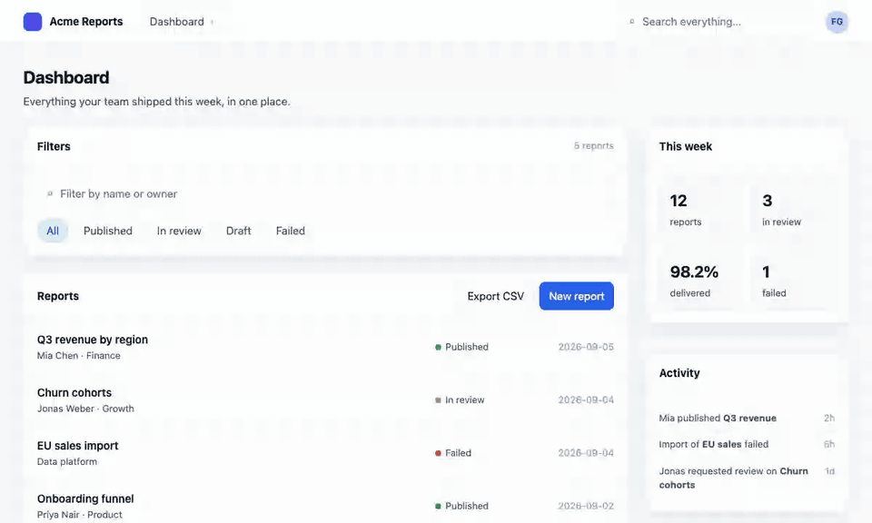

Redlining, in the proofreader's sense: click an element or draw a box in your running app, write a note, and every annotation resolves to the file, line, host element and component owner chain. Your coding agent — Claude Code first, any other through the same file — applies the batch in one pass. Built for Next.js; runs on any page.

Wrap next.config with withRedlining(), mount
<Redlining /> in the root layout, run
npx redlining init. Identical in every project.
The loader only runs for the dev server, and the package's production build is a
component that returns null. No bytes, no attributes, no routes in
next build.
The anchor is a static attribute stamped at compile time, so it reaches the HTML regardless of where the component rendered. The owner chain comes from React's dev fiber tree.
Resize, nudge, restyle and retype directly in the page. The export carries every change as before → after next to the element's classes; the agent maps it to your utilities or tokens.
/redline in Claude Code reads .redlining/annotations.md, edits
exactly the anchors listed, verifies in the running app, and reports per annotation. Any
other agent gets the same file, or the prompt from the Copy button.
annotations.md,
annotations.json and a screenshot with numbered pins into
.redlining/.
/redline, or hand .redlining/ to
your agent. It edits the named files in order, verifies, and deletes the files.
Everything that reads the DOM — select, draw, move, tweak with provenance, notes with
reference images, the export — works on any page. The exact file:line needs
stamped JSX (Next.js or Vite), and the component names need a framework that exposes them.
See Other stacks.
| Setup | Status | Precision |
|---|---|---|
| Next.js 16+, Turbopack or webpack, App Router | Supported | file:line + owner chain |
Vite + React (redlining/vite) |
Supported | file:line + owner chain |
| Any React app, overlay only | Supported | owner chain + CSS selector; Save downloads the files |
Angular (dev mode), via redlining/standalone |
Supported | component names + CSS selector; Save downloads the files |
Vue, plain HTML, anything else, via redlining/standalone |
Supported | CSS selector (+ Vue instance names); Save downloads the files |